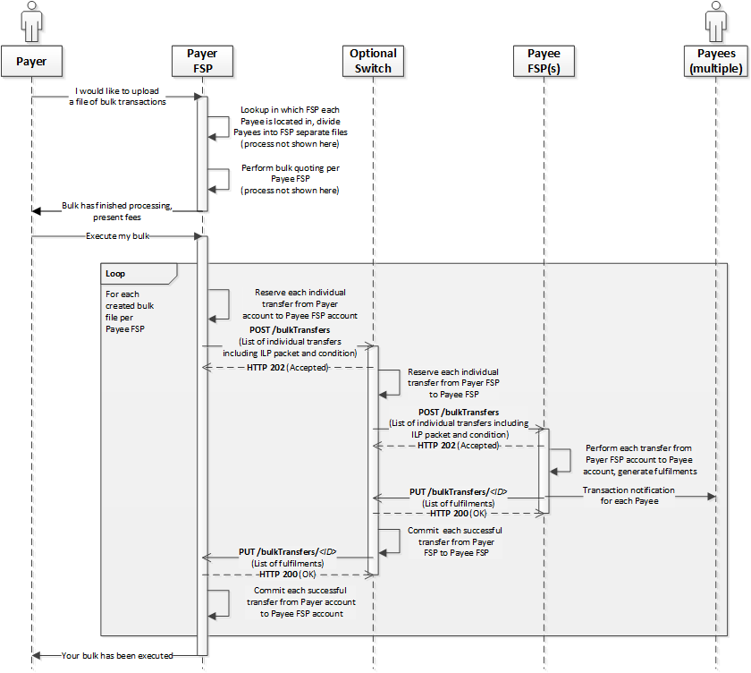

Bulk Transfers Design
The Bulk Transfers scenario is described in the API Definition document regarding the resource /bulkTransfers. For details (refer to section 6.10) as per the Mojaloop Specification
- Introduction
- Design Considerations
- Steps involved in the high-level Architecture
- Notes
- Roadmap Topics
1. Introduction
The Bulk Transfers process is discussed in section 6.10 of the API Definition 1.0 document, depicted in Figure 60, of which a snapshot is posted below. 
The key items implied in the specification in its current version 1.0 are that
- Reservation of funds is done for each individual transfer from the Payer FSP to the Payee FSP
- Even if a single individual transfer fails during the prepare process, the whole bulk is to be rejected.
2. Design Considerations
According to the Figure-60 of the specification, below are a few key implications from the Specification.
- The Payer DFSP performs user look-ups for the individual parties involved in the bulk payment separately
- The Payer DFSP performs bulk quoting per Payee DFSP
- The onus is on the Payer DFSP to prepare bulk transfers based on Payee FSPs and send out a bulk transfer request to a single Payee FSP
- This seems to be an all-or-nothing process where even if a single individual transfer fails to be reserved, then the whole bulk needs to be rejected because it cannot be sent to the Payee as it is if it has an individual transfer for which funds couldn't be reserved.
- In light of the above, the proposal being made right now is to empower the Switch (needs updating the Specification) to send out the POST /bulkTransfers request with the list of individual transfers for which funds were able to be reserved on the Switch.
- The implication is that the Switch aggregates commits/failures from the Payee FSP for the bulk and sends out a single PUT /bulkTransfers/{ID} call to the Payer FSP that includes the entire list of transfers that includes individual transfers that failed both at the Switch and the Payee FSP
- For example: If there are 1000 individual transfers in a Bulk Transfer and if the Switch is able to reserve funds for 900 of the individual transfers, then a prepare bulk transfer request to the Payee DFSP is sent with the list of those 900 individual transfers. Once the Payee FSP sends the Bulk Fulfil request for those 900 transfers of which lets say, 800 can be committed and 100 are aborted, then the Switch processes those individual transfers accordingly and sends out the PUT callback (PUT /bulkTransfers/{ID}) notification to the Payer FSP with all the 1000 individual transfers, 800 of which are committed and 200 of which are aborted.
- There will be implications to aspects such as Signature, Encryption, PKI and other security aspects that will need to be addressed.
- The ordering of the individual transfers need to be considered as well by the Scheme. A Goal for implementation in emerging markets is to maximize the number of transactions involved and so a well designed Scheme may re-order individual transfers in the ascending order of the magnitude of amounts and then process them. But this can be a Scheme consideration.
- However, a recommended Scheme Rule is that the Payee FSPs shouldn't be allowed to re-order the individual transfers in a bulk to avoid bias towards Payee parties.
- For Settlements with bulk transfers where Government payments are involved with large sums of money needs to be discussed to allow for moving through transfers without strict liquidity rules needs to be discussed.
3. Steps involved in the high-level Architecture
Below are the steps involved at a high level for bulk transfers.

- [1.0, 1.1, 1.2] An Incoming bulk Transfer request (POST /bulkTransfers) on the ml-api-adapter is placed in an object store and a notification with a reference to the actual message is sent via a kafka topic “bulk prepare” and a 202 is sent to the Payer FSP
- [1.3] Bulk Prepare handler consumes the request, records the status as RECEIVED
a. Bulk Prepare handler then validates the Bulk and changes state to PENDING if the validation is successful b. One validation rule proposed in addition, here is to reject a bulk if there are duplicate transfer IDs used in the bulk itself. c. [<alt>1.4] If validation fails, Bulk Prepare handler changes the bulkTransferState to Pending_Rejected (an internal state) and produces a message onto the bulk processing topic i. Bulk processing Handler then updates the bulkTransferState to REJECTED and sends a notification to the Payer - [1.4] [Continuing 2.a] Bulk Prepare handler breaks down the bulk into individual transfers and puts each of them on the prepare topic
a. As part of this, each transfer is individually assigned the 'expiration time' of the bulk Transfer itself (and other fields necessary for individual transfers) - [1.5, 1.6, 1.7] Prepare handler, Position handler are refactored to handle individual transfers in a bulk, using flags such as type, action, status, etc.
a. Reservation of funds --> This is left to the individual handlers and the whole bulk is then aggregated in the Bulk Processing Handler. - [1.8] Position Handler produces messages corresponding to individual transfers that are part of a bulk to bulk processing topic
- [1.9] For every message consumed from the bulk processing topic a check is made on the Bulk processing Handler to see if that’s the last individual transfer in a bulk for that processing phase.
- [1.10, 1.11, 1.12] If it is the last transfer, aggregate the state of all the individual transfers and
a. If all of them are in reserved state --> Send POST /bulkTransfers to the Payee (by producing a message to the notifications topic which is then consumed by the notification handler) b. Once the bulkTransfer prepare request is sent to the Payee, then change status to ACCEPTED - In a successful case of Prepare - when the PUT from the Payee FSP for bulkFulfil is received, a notification is put on the bulk fulfil topic with a reference to the actual Fulfil message that's stored in an Object store.
- This is to be consumed by the bulkFulfilHandler, which then changes state to PROCESSING.
- The bulk-fulfil-handler breaks down the bulk into individual transfers and sends each of them through the refactored Fulfil, Position Handlers to commit/abort each of them based on the PUT /bulkTransfers/{ID} message by the Payee and commit/release funds on the Switch
- The bulk-processing-handler is to then aggregate all the individual transfer results and change the state of bulkTransfer to COMPLETED/REJECTED based on success/failure
a. If the Payee sends COMMITTED for even one of the individual transfers the proposal is to change bulk state to COMPLETED. b. However, for step-8 or if the Payee sends REJECTED as bulkTransferState then final state on Switch should be REJECTED. - Send notifications to both Payer and Payee (similar to Single transfers, though diverging from the Spec 1.0). The Payer-FSP receives the notification that includes an exhaustive list of individual transfers, same as the list present in the prepare request sent by the Payer. The Payee-FSP receives a notification only for sub-set of transfers, which were sent to it from the Switch as the Bulk prepare request (that were able to be reserved at the Switch).
4. Implementation Details
4.1 Bulk Transfer States
Below are the states of a Bulk transfer as per the Mojaloop API Specification
- RECEIVED
- PENDING
- ACCEPTED
- PROCESSING
- COMPLETED
- REJECTED
- Internal state - INVALID (mapped to REJECTED)
- Micro-states to be added for internal use on the Switch
4.2 Proposed New tables
Below are the proposed tables as part of designing the Bulk transfers
- bulkTransfer
- bulkTransferStateChange
- bulkTransferError
- bulkTransferDuplicateCheck
- bulkTransferFulfilment
- bulkTransferFulfilmentDuplicateCheck
- bulkTransferAssociation
- bulkTransferExtension
- bulkTransferParticipant
- bulkTransferState
- bulkProcessingState
- Link to the ERD from the PR: https://github.com/elnyry/documentation/blob/feature/738-bulk-transfers-design-changes/mojaloop-technical-overview/central-bulk-transfers/assets/database/central-ledger-schema.png
4.3 Internal Type-Action-Status combinations
1. Bulk transfer that passes schema validation [ml-api-adapter -> bulk-prepare-handler]
- type: bulk-prepare
- action: bulk-prepare
- Status: success
- Result: bulkTransferState=RECEIVED, bulkProcessingState=RECEIVED
2. Duplicate [bulk-prepare-handler -> notification handler]
- type: bulk-notification
- action: bulk-prepare-duplicate
- Status: success
- Result: bulkTransferState=N/A, bulkProcessingState=N/A
3. Duplicate (bulktransfer state does not exist) [bulk-prepare-handler -> notification-handler]
- type: bulk-notification
- action: bulk-prepare-duplicate
- Status: error
4. Validate Bulk Prepare transfer failure [bulk-prepare-handler -> notification-handler]
1. type: bulk-notification
2. action: bulk-abort
3. Status: error
5. For a Valid Bulk Prepare transfer (broken down and sent as individual transfers) [bulk-prepare-handler -> prepare-handler]
- type: bulk-prepare
- action: prepare
- Status: success
6. Duplicate of individual transfer that is part of a bulk-transfer [prepare-handler -> bulk-processing-handler]
- type: bulk-processing
- action: prepare-duplicate
- Status: success
- Expected action: Add error message indicating it’s a duplicate
- Result: bulkTransferState=PENDING_PREPARE/ACCEPTED (depending on whether it’s the last one), bulkProcessingState=RECEIVED_DUPLICATE
7. For individual Prepare transfer that’s a valid duplicate in prepare handler [prepare-handler -> bulk-processing-handler]
- type: bulk-processing
- action: prepare-duplicate
- Status: error
- Result: bulkTransferState=PENDING_PREPARE/ACCEPTED (depending on whether it’s the last one), bulkProcessingState=RECEIVED_DUPLICATE
8. For a Valid individual Prepare transfer that’s part of a bulk [prepare-handler -> position-handler]
- type: bulk-position
- action: prepare
- Status: success
9. For individual Prepare transfer that’s part of a bulk that failed validation in prepare handler [prepare-handler -> bulk-processing-handler]
- type: bulk-processing
- action: prepare
- Status: error
- Result: bulkTransferState=PENDING_PREPARE/ACCEPTED (depending on whether it’s the last one), bulkProcessingState=RECEIVED_INVALID
10. For a Valid individual Prepare transfer that’s part of a bulk [position-handler -> bulk-processing-handler]
- type: bulk-processing
- action: prepare
- Status: success
- Result: bulkTransferState=PENDING_PREPARE/ACCEPTED (depending on whether it’s the last one), bulkProcessingState=ACCEPTED
11. For individual Prepare transfer that’s part of a bulk that failed validation in position handler [position-handler -> bulk-processing-handler]
- type: bulk-processing
- action: prepare
- Status: error
- Result: bulkTransferState=PENDING_PREPARE/ACCEPTED (depending on whether it’s the last one), bulkProcessingState=RECEIVED_INVALID
12. For a Valid individual Fulfil transfer (for commit) that’s part of a bulk [position-handler -> bulk-processing-handler]
- type: bulk-processing
- action: commit
- Status: success
- Result: bulkTransferState=PENDING_FULFIL/COMPLETED (depending on whether it’s the last one), bulkProcessingState=COMPLETED
13. For Bulk transfer Fulfil message that passes validation [ml-api-adapter -> bulk-fulfil-handler]
- type: bulk-fulfil
- action: bulk-fulfil
- Status: success
14. For a valid individual transfer part of a bulk that timed-out in position handler [position-handler -> bulk-processing-handler]
- type: bulk-processing
- action: abort
- Status: error
- Result: bulkTransferState=PENDING_FULFIL/COMPLETED (depending on whether it’s the last one), bulkProcessingState=FULFIL_INVALID
15. For a Valid individual Fulfil transfer (for reject) that’s part of a bulk [position-handler -> bulk-processing-handler]
- type: bulk-processing
- action: reject
- Status: success
- Result: bulkTransferState=PENDING_FULFIL/COMPLETED (depending on whether it’s the last one), bulkProcessingState=REJECTED
16. Invalid Fulfil duplicate of an individual transfer in a bulk [fulfil-handler -> bulk-processing-handler]
- type: bulk-processing
- action: fulfil-duplicate
- Status: error
- Result: bulkTransferState=PENDING_FULFIL/COMPLETED (depending on whether it’s the last one), bulkProcessingState=FULFIL_DUPLICATE
17. Valid Fulfil duplicate of an individual transfer in a bulk [fulfil-handler -> bulk-processing-handler]
- type: bulk-processing
- action: fulfil-duplicate
- Status: success
- Result: bulkTransferState=PENDING_FULFIL/COMPLETED (depending on whether it’s the last one), bulkProcessingState=FULFIL_DUPLICATE
18. Valid Fulfil message of an individual transfer in a bulk [fulfil-handler -> position-handler]
- type: bulk-position
- action: commit
- Status: success
19. For individual Fulfil transfer that’s part of a bulk that failed validation in fulfil handler [fulfil-handler -> bulk-processing-handler]
- type: bulk-processing
- action: commit
- Status: error
- Result: bulkTransferState=PENDING_FULFIL/COMPLETED (depending on whether it’s the last one), bulkProcessingState=FULFIL_INVALID
20. Fulfil transfer request that’s part of a bulk that passes validation [bulk-fulfil-handler -> fulfil-handler]
- type: bulk-fulfil
- action: bulk-commit
- Status: success
21. For Bulk transfers failing validation at bulk-fulfil-handler level [bulk-fulfil-handler -> notification-handler]
- type: bulk-notification
- action: bulk-abort
- Status: error
22. For Bulk transfer notifications to FSPs [bulk-processing-handler -> notification-handler]
- type: bulk-notification
- action: bulk-notification
- Status: success
23. For timeout notification [timeout-handler -> bulk-processing-handler]
- type: bulk-processing
- action: timeout-received
- Status: error
- Result: bulkTransferState=COMPLETED (for the last one), bulkProcessingState=EXPIRED
24. For timeout notification [timeout-handler -> position-handler]
- type: bulk-position
- action: timeout-reserved
- Status: error
25. For timeout notification after position adjust [position-handler -> bulk-processing-handler]
- type: bulk-processing
- action: timeout-reserved
- Status: error
- Result: bulkTransferState=COMPLETED (for the last one), bulkProcessingState=EXPIRED
4.4 Additional Notes
- Document GET /bulkTransfers to indicate the difference in responses the Payer-FSP & Payee-FSP receive for Bulk Transfers
- Use a separate mode for ml-api-adapter to support bulk transfers end-points (that includes persistence as discussed above)
5. Roadmap Topics
- Re-assess the need to support multiple Payee FSPs as part of a Bulk and the changes to the Specification needed.
- Issues, learnings from the PoC that are documented are addressed in order of priority
- Find out a need to support something like a Bulk make resource (/bulkMake ?) in which the Switch accepts an entire Bulk as it is and then takes care of all three phases - lookup, quote and transfers.
- Throttling of individual transfers in a bulk?
- The aspect of ordering in a Bulk - the order of processing at the Switch and at the FSPs. Recommendation to Scheme to incorporate Rule to mandate all FSPs to process transactions a bulk in the existing order and not have preferential processing. On the Switch currently being neutral with ordering but best practice is to sort in ascending order of amounts and process.
- For Settlements with bulk transfers where Government payments are involved with large sums of money needs to be discussed to allow for moving through transfers without strict liquidity rules needs to be discussed.